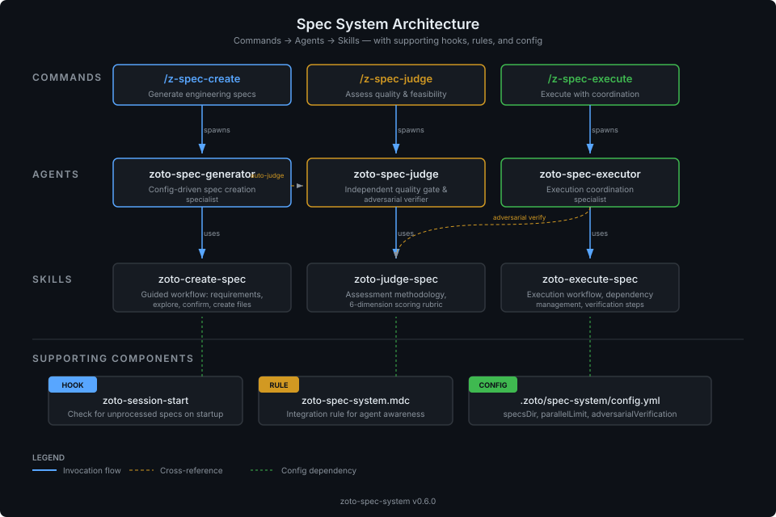

Spec System
A Cursor plugin that brings structured engineering specs to AI-assisted development. Decompose complex work into subtasks, get independent quality assessment, and execute with adversarial verification — all inside your editor.
When to Use the Spec System
Cursor already has a built-in Plan mode that works well for straightforward tasks: the agent thinks through an approach, you approve it, and it executes — all in one session. That’s often all you need.
The Spec System is for the tasks that Plan mode isn’t designed for — complex, multi-session initiatives where you need:
- A durable artifact to review and share — Specs are ordinary markdown files committed to your repo. Share them with teammates in a PR, discuss trade-offs in comments, and iterate before anyone writes code. Plan mode plans are ephemeral — they exist only in the chat.
- Collaborative refinement before execution — The judge independently assesses the spec and offers to apply fixes. You can re-judge, edit the spec files directly, and loop until the plan is solid. Execution doesn’t start until you’re ready.
- Structured decomposition with dependencies — Subtasks have explicit dependency graphs, phased execution order, and parallel limits. The system won’t start a task before its dependencies are verified complete.
- Independent verification at every step — A fresh agent that didn’t write the code checks every deliverable. Plan mode has no adversarial verification — the same agent plans and executes.
| Cursor Plan Mode | Spec System | |
|---|---|---|
| Best for | Focused, single-session tasks | Complex, multi-step initiatives |
| Plan artifact | Ephemeral (lives in chat) | Durable markdown files in your repo |
| Review & collaboration | Approve/reject in chat | Share in PRs, iterate with judge, edit spec files directly |
| Dependency management | None | Explicit dependency graph with phased execution |
| Quality gate | None | Independent judge scores 6 dimensions, offers fixes |
| Verification | Same agent plans and executes | Adversarial: fresh agent verifies each deliverable |
| Resumability | Lost if session ends | Resume from any point — progress is in the spec files |
| Committed to repo | No — ephemeral | Yes — specs ship with feature code as permanent history |
| Long-term learning | None | Optional CRUX Memories extracts learnings for future sessions |
If the task can be described in a sentence and done in one session, use Plan mode. If it needs a design discussion, has multiple moving parts, or would benefit from a second opinion before execution — create a spec.
Specs live with your code
Spec files are designed to be committed alongside the feature code they describe. The spec directory — index, subtasks, assessment, and execution report — is part of your repository history. This gives you a permanent record of why something was built, not just what changed. Reviewers can read the spec in the same PR as the implementation, future contributors can trace architectural decisions back to their origin, and the execution report documents exactly what was verified and when.
Long-term value with CRUX Memories
Specs become even more valuable over time when paired with the optional
CRUX Memories
integration. After a spec is executed, the /crux-dream command
extracts structured learnings — patterns discovered, risks encountered,
conventions established — and stores them as persistent memories. On
future initiatives, /crux-mindreader surfaces relevant memories
so agents don’t rediscover the same facts. Over time, your project
builds an institutional knowledge base derived from real execution history,
not just documentation.
Enable it by installing the CRUX Memories plugin and setting
extensions.memory.enabled: true in your
configuration. The Spec System works
fully without it — memory is an optional layer for teams that want
compounding returns from their specs.
The Problem with Unstructured Sessions
Even with a plan, complex initiatives routinely fail in unstructured AI-assisted sessions:
- Context loss — Long conversations drift. The agent forgets earlier decisions, repeats work, or contradicts itself.
- No dependency management — Without structure, tasks run in the wrong order. Code is written before the interfaces it depends on exist.
- Inconsistency — Different parts of the codebase are modified with conflicting assumptions because there is no single source of truth for what was decided.
- No verification — The agent that wrote the code also checks the code. Mistakes pass unchallenged because there is no independent review.
The result: wasted iterations, subtle bugs, and a codebase that needs manual cleanup after every large AI-assisted session.
The Solution
The Spec System replaces ad-hoc prompting with a disciplined three-phase workflow: Create a structured spec, Judge it independently, then Execute with guardrails and adversarial verification.
Break the initiative into subtasks with explicit dependencies, phases, and a definition of done. The spec is a durable markdown artifact that survives context boundaries.
A fresh agent — with no context from the planning session — scores the spec across six dimensions and issues a verdict. Then offers to apply recommended fixes directly to the spec files.
Subtasks run in dependency order with configurable parallelism. After each subtask, an independent judge verifies deliverables before the next phase begins.
Key Features
Structured spec creation
Specs are broken into subtasks with explicit dependency graphs. Subtasks are grouped into execution phases — tasks within a phase run in parallel, and a phase only starts after all prior phases complete. The result is an index file plus individual subtask files, all ordinary markdown in your repository.
Independent quality assessment
The judge agent scores specs (and repositories) across six dimensions: Completeness, Feasibility, Structure, Specificity, Risk Awareness, and Convention Compliance. Scores produce a clear verdict — Approve (4.0+), Conditional (3.0–3.9), or Reject (< 3.0) — with actionable findings for each dimension.
Phased parallel execution
The executor follows the dependency graph to determine which subtasks can run concurrently. A configurable parallel limit (default: 4) prevents resource exhaustion. Progress is tracked in the spec index file, and interrupted executions can be resumed.
Adversarial verification
After each subtask completes, a fresh judge agent — with no context from the executing agent — independently verifies every deliverable and definition-of-done item. The judge's checklist state is authoritative: it can untick items the executor claimed were done. This eliminates the "grading your own homework" problem.
Configurable terminology and structure
Rename "spec" to "story", "task", or any term your team uses. Change
the directory layout. Adjust parallel limits, toggle the session-start
nudge, or disable adversarial verification entirely. All via a single
config.json file. See the
Configuration reference for details.
Workflow Overview
The diagram below shows the full lifecycle of a spec, from requirements gathering through execution and final verification.

Phase 1: Create
Run /zoto-spec-create to start a guided workflow. The
generator agent asks clarifying questions, explores your codebase to
understand existing patterns, then produces a spec index and subtask
files under your configured specs directory. You confirm key decisions
before any files are written.
Phase 2: Judge
Run /zoto-spec-judge on the spec (or skip straight to
execution if you prefer). A fresh judge agent — deliberately
isolated from the planning context — reads the spec, explores
your codebase, and produces a structured assessment with scores across
six quality dimensions and a final verdict. It then offers to apply
recommended fixes directly to the spec files — fixing dependencies,
clarifying deliverables, or splitting oversized subtasks — so you
can iterate quickly.
Phase 3: Execute
Run /zoto-spec-execute to begin implementation. The
executor spawns subagents for each subtask, respects the dependency
graph, and coordinates adversarial verification after each subtask
completes. A final verification step runs your project's test suite
and lint checks before presenting an execution report for your review.
Components
The Spec System is composed of three commands, three agents, three skills, and supporting infrastructure (hooks, rules, configuration).

| Layer | Component | Role |
|---|---|---|
| Command | /zoto-spec-create |
Entry point for creating a new spec |
| Command | /zoto-spec-judge |
Entry point for quality assessment |
| Command | /zoto-spec-execute |
Entry point for spec execution |
| Agent | zoto-spec-generator |
Config-driven spec creation specialist |
| Agent | zoto-spec-judge |
Independent quality gate and adversarial verifier |
| Agent | zoto-spec-executor |
Execution coordination specialist |
| Skill | zoto-create-spec |
Guided workflow for requirements, exploration, and file creation |
| Skill | zoto-judge-spec |
Assessment methodology with six-dimension scoring rubric |
| Skill | zoto-execute-spec |
Execution workflow with dependency management and verification |
| Hook | zoto-session-start |
Checks for unprocessed specs on Cursor startup |
| Rule | zoto-spec-system.mdc |
Integration rule that teaches agents about available commands |
| Config | config.json |
Terminology, directories, execution limits, extensions |
Getting Started
Ready to use the Spec System? Here is where to go next: